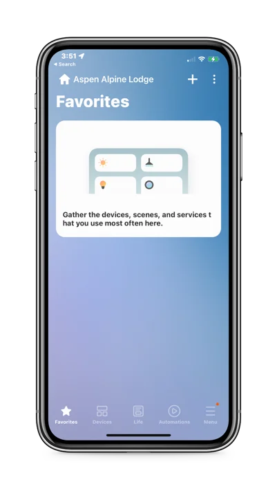
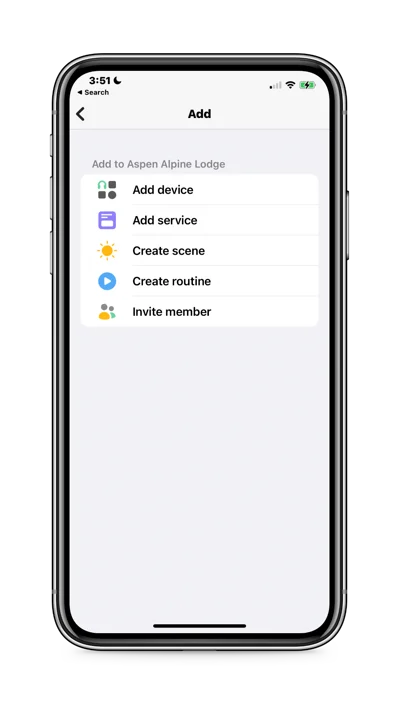
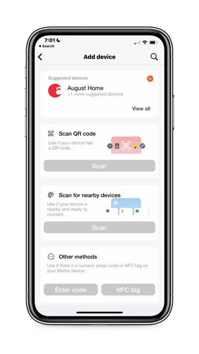
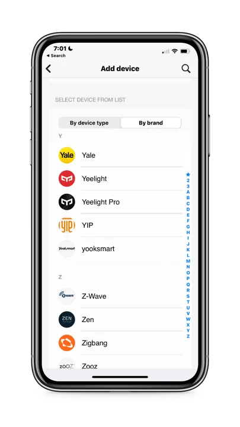
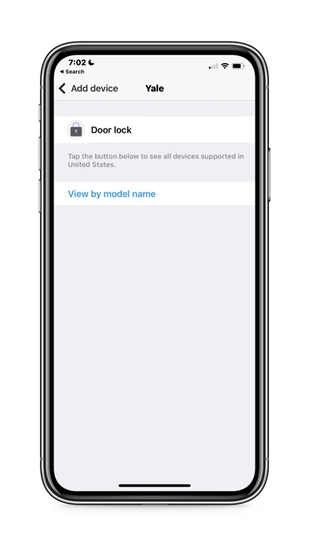
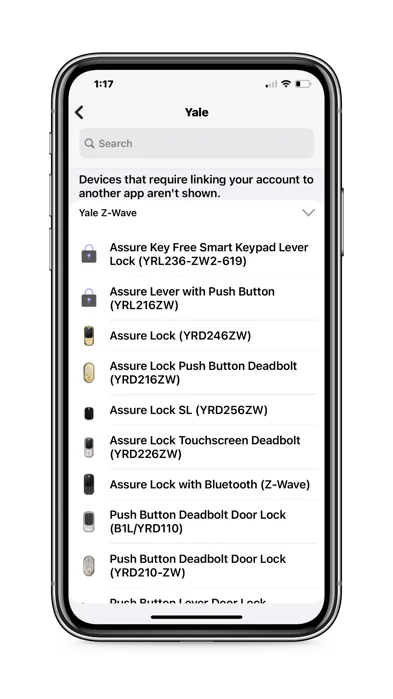
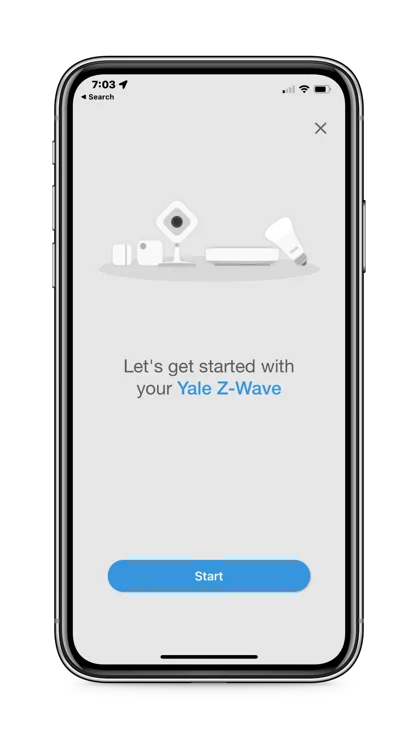

Install the lock on the door (latch & strike plate, keypad, interior mounting plate, attach the cable assembly, interior Escutcheon) following the instructions provided by the manufacturer.
When the lock is on the door, insert the Z-Wave Plus module (green plastic module) above the battery compartment. See the green Z-Wave module in the photo above. Please take note that if you cannot find the module, it sometimes gets stuck in the dark plastic packaging as it is very light.
Install the batteries & cover using a small Philips screwdriver.
Set the 4-6 digits Master pin code. Of note, this is the first step that is required to activate the lock. If not done first, the lock cannot be configured or installed.
Now you can connect it to the SmartThings app.
Click on the + icon on the top right.
The "Add" page opens - click "Add device"


On the "Add device page," scroll down to the bottom of the page to the search "by device type" or "By brand" tabs.
Search for the smart lock or any other device by Brand.


Click "View by model name".
Click on the specific Z-Wave lock model on the list.


Ok, get started with your Yale Z-Wave Lock!
Click "Start".

Select the closest hub that you wish to connect with. This is where having named any Hub with a descriptive name of its location will help you find it easily.
Click "Next".
SmartThings now prepares to connect with the lock - Be patient!
Then, follow carefully the 5 steps called out in the app.
Success! The lock has been added to SmartThings app with a default name but there is one more important task to do.
Make sure to rename the smart lock starting with the word "Lock" followed by the name of its "Location." Ex. "Lock-Room 101". This specific lock name will make it easier later to add this lock to a specific zone in Devicethread app.
If you skip this step, it will be very difficult setting up this lock in Devicethread.
SmartThings gives the installed smart lock a generic default name.
Rename it right away so you do not forget!
Bravo! The SmartThings shows all the devices currently associated with your property and Samsung account, which includes the one you just installed. You can make out where the devices are with the descriptive names you assigned to each device.